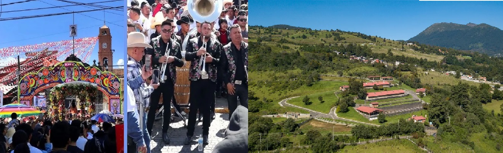

San Miguel Ajusco- Tlalpan
Tomado de Internet
Tomado de Internet
San Miguel Ajusco, uno de los pueblos originarios más representativos de la Alcaldía Tlalpan.
San Miguel Ajusco se encuentra en la zona sur de Tlalpan, dentro de la Ciudad de México, cerca del Parque Nacional Cumbres del Ajusco, en un área montañosa y boscosa. Su cercanía al Ajusco lo hace importante tanto ecológica como culturalmente.
Historia
Es un pueblo originario de ascendencia nahua, con raíces prehispánicas y colonial-mexicanas.
Durante la época colonial, la comunidad se mantuvo con propiedad comunal de tierras y prácticas agrícolas tradicionales.
Su nombre proviene del náhuatl: Ajusco significa “cumbre donde se hiela el agua” o “cerro donde hace frío”, relacionado con la altitud y el clima de la región.
Economía
Tradicionalmente basada en agricultura, ganadería y producción de hortalizas.
Hoy en día, combina estas actividades con turismo ecológico, excursiones y venta de productos locales a visitantes del Ajusco.
Cultura y tradiciones
Conservan fiestas patronales y rituales católicos sincréticos con tradiciones indígenas.
Destacan celebraciones como el Día de San Miguel Arcángel, que mezcla ceremonias religiosas, música, danza y gastronomía típica.
Artesanías y productos locales: tejidos, hortalizas, miel y pan artesanal.
Patrimonio natural
Ubicado en las faldas del Parque Nacional Cumbres del Ajusco, con bosques de pino y encino, ríos y áreas protegidas.
La comunidad participa en proyectos de conservación ambiental y ecoturismo responsable.
